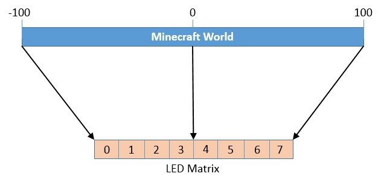

Now we're going to integrate the LED Matrix into our Minecraft projects. In this project, the LED Matrix will be used as a map of the Minecraft world, and we'll light up one of the LEDs to denote our position in the world. As we move through the Minecraft world, the LED Matrix will track our movement and plot our position.
Our code for this project will contain all the standard pieces necessary to get Minecraft running — importing modules/functions we'll need, attaching to the Minecraft server and starting Minecraft — while our project-specific code will completely lie within our game loop.
Our game loop will do three things:
First, we'll get the location of our character within the Minecraft world.
Next, we'll determine the relative position of our character on the 8x8 layout of the LED Matrix.
Finally, we'll plot that relative location on the LED Matrix.
Here is what the full code for this project should look like. We'll dig further into the highlighted pieces of code below:
Much of the code for this project should be self-explanatory at this point, but there is one section that could probably use some additional explanation:
Once we retrieve our position in the Minecraft world using the
getTilePos() function, we need to map that vector position to a
point on the LED Matrix. We do this on lines 15 and 16 for the x
direction, and on lines 18 and 19 for the z direction.
The SCALE value is the amount by which we want to shrink the Minecraft
world to fit on the LED Matrix. While the size of the Minecraft world will
change from game to game — it's generated randomly when the game starts — it
will typically be around 200 units in length and width. Since we are going to
want to scale from a total length/width of 200 units down to a total
length/width of 8 units (the length/width of the LED Matrix), our scale
factor should be about 25 (200 / 25 = 8).
Here is a visual representation of what we will need to do:
To convert the actual position in the Minecraft world (width of about 200)
to a scale that matches the size of the LED Matrix (width of 8), we need to
divide our actual position by our scale value. Next, because that scaling
will result in a value between about -4 and 4 (instead of the 0 to 7 that we
need), we need to shift the value by the distance from the edge of the LED
Matrix to the center point (fb_width - 1).
Next, we convert our scale value to a whole number between 0 and 7, so
that we can plot it on the LED Matrix. We do this by taking the result of the
computation above and using the round() function.
Finally, because we can't be sure of the actual size of the Minecraft world (it could be larger than we anticipate), we need to ensure that this whole number doesn't fall outside the 0 to 7 range.
This is accomplished using the code:
min(fb.width-1, max(0, led_pos))The resulting value is between 0 and 7 (assuming the width of the LED Matrix is 8 points).
We scaled down the Minecraft world so that a width of 200 Minecraft blocks (from -100 to 100) is represented on the LED Matrix. Modify this so that only -10 to 10 Minecraft blocks are represented.
Instead of using a point to represent the position, can you use a plus sign made up of two crossing lines (one horizontal and one vertical) that are each 3 points long?
Can you do the draw the same plus sign as the previous question, but with a Sprite()?